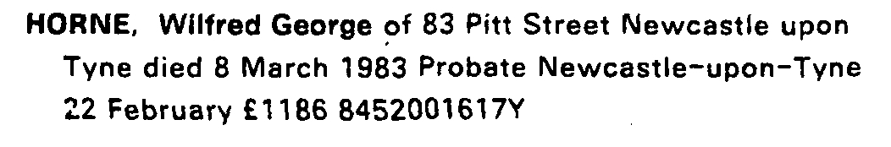
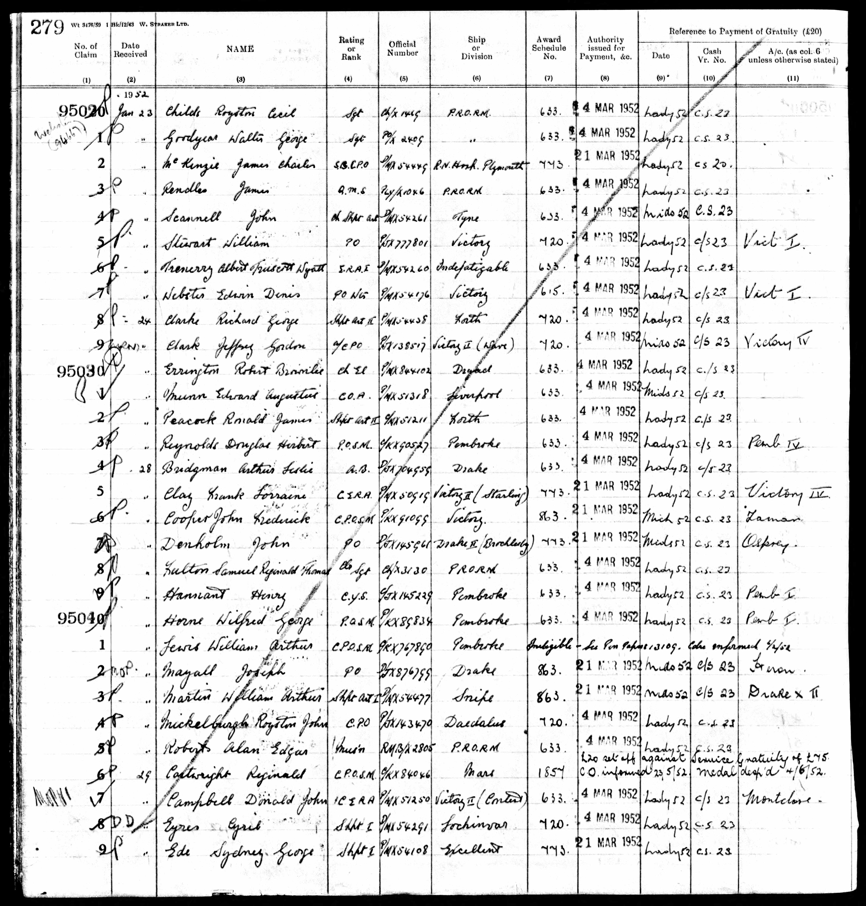
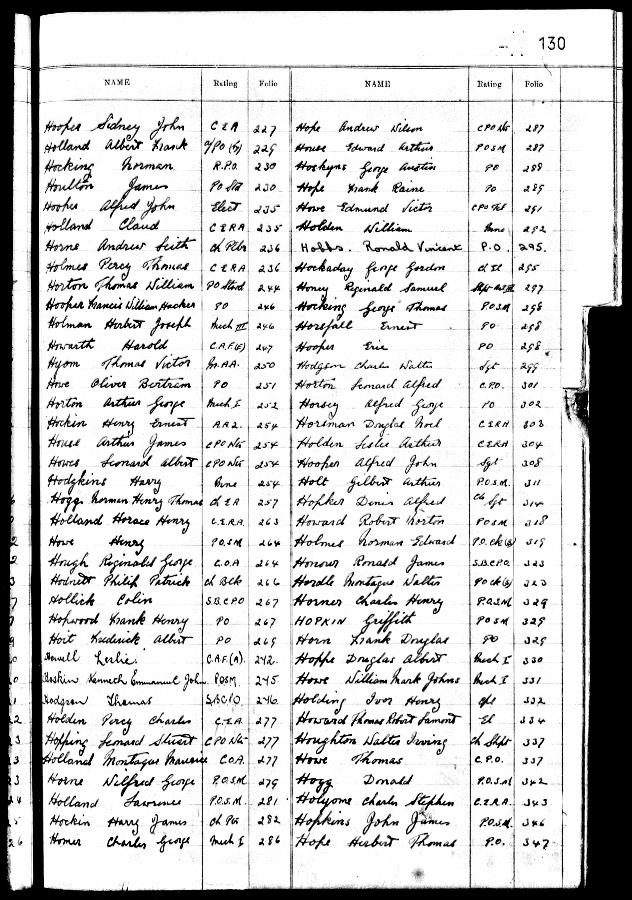
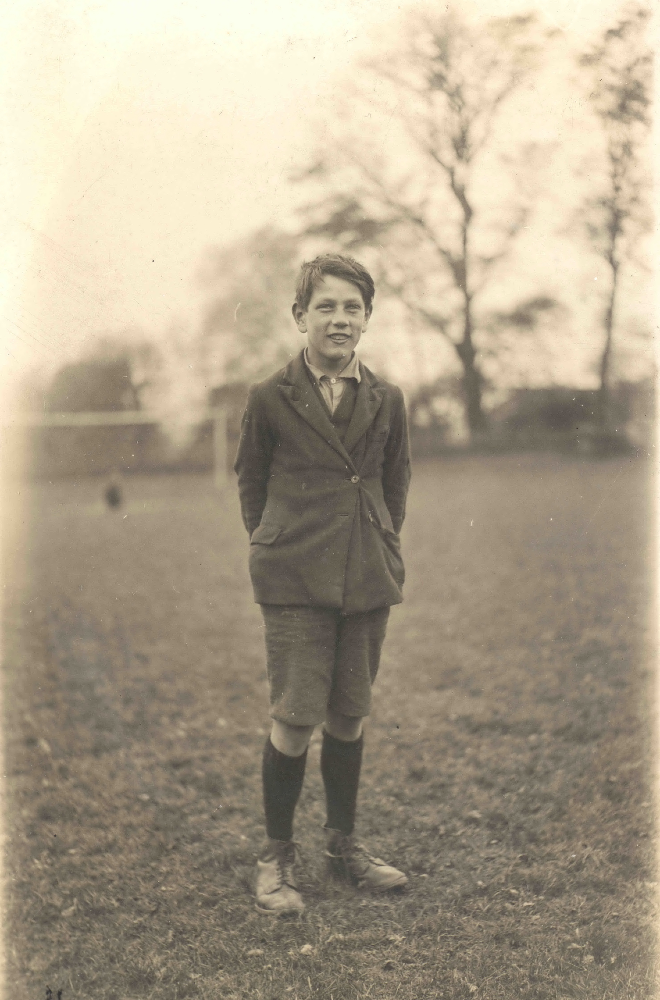
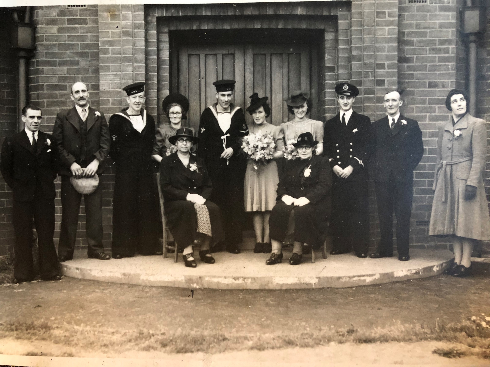
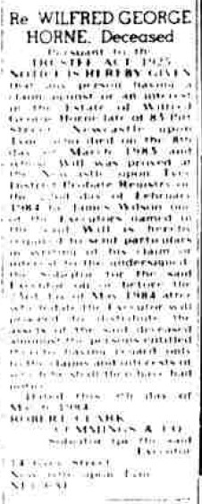
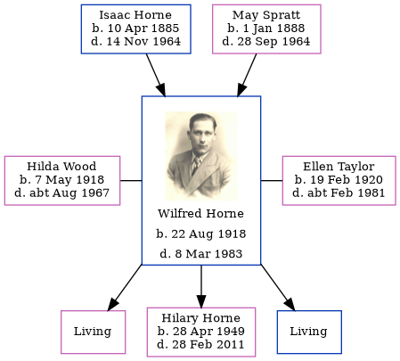

Wilfred George Horne 1918 - 1983
[ Home ] | [ Calendar ] | [ Surnames Index ] | [ Errors ] | [ Family History ]The 4th of 7 children of Isaac Horne (a hay trusser & thatcher heavy worker market gardener) and May Spratt, Wilfred Horne, the uncle of Nigel Horne, was born in Minster, Thanet, Kent, England on 22 Aug 19181,2,3,4 and was married twice - to Hilda Wood (c. Aug 1942 in North Shields, Tyne and Wear, England) Ellen Taylor (in 1970 in Newcastle Upon Tyne, Tyne and Wear, England, following the death of Hilda c. Aug 1967)6. He had 3 children with Hilda Wood: Gillian C, Hilary Ann and Adrian Keith.
During his life, he was living at Pansy Cottage, Way, Minster, Thanet, Kent, England on 19 Jun 19211; and at 83 Pitt Street, Newcastle Upon Tyne, Tyne and Wear in 1983.
He served in the military (Royal Navy - Petty Officer Stoke Mechanic).
He died on 8 Mar 1983 in Newcastle Upon Tyne, Tyne and Wear, England2,4,5.
Parents
- Isaac was born on 10 Apr 1885
- May was born on 1 Jan 1888
Children
- Hilary Ann was born on 28 Apr 1949
Citations
- 1921 Census Of England & Wales - Findmypast (was age 2 and the son of the head of the household)
- England & Wales deaths 1837-2007 - Findmypast
- England & Wales, Birth Index: 1916-2005 Online publication - Provo, UT, USA: The Generations Network, Inc., 2008.Original data - General Register Office. England and Wales Civil Registration Indexes. London, England: General Register Office. © Crown copyright. Published by permission of the Cont
- England & Wales, Death Index: 1984-2005 Online publication - Provo, UT, USA: The Generations Network, Inc., 2007.Original data - General Register Office. England and Wales Civil Registration Indexes. London, England: General Register Office. © Crown copyright. Published by permission of the Cont
- England & Wales Government Probate Death Index 1960-2019 - Findmypast
- England & Wales Marriages 1837-2005 - Findmypast
Media
Wilfred George Horne
Wilfred George Horne - probate

Wilfred George Horne - 2
Wilfred George Horne - Naval Record 1

Wilfred George Horne - Naval Record 2

Wilfred George Horne - 3

Wilfred George Horne - 3
Wilfred George Horne - 4
Wilfred George Horne - 5
Marriage of Wilfred George Horne to Hilda Wood

Wilfred George Horne - 5
Newcastle Journal - 9 Mar 1984

England & Wales marriages 1837-2008 - BMD/M/1942/3/AZ/000661/081
England & Wales deaths 1837-2007 - BMD/D/1983/1/AZ/000522/018
England & Wales births 1837-2006 - BMD/B/1918/3/AZ/000588/014
England & Wales Government Probate Death Index 1960-2019 - GBOR/GOVPROBATE/A/1984-1986/00580524
1921 Census Of England & Wales - GBC/1921/RG15/04430/0061/04
Family Tree
Map
Generated by ged2site. Last updated on Jul 3, 2024
Known Issues
Residence record for 1983 contains no citation
May have been living with mother on 19 Jun 1921, but the addresses don't match or aren't detailed enough to be sure
May have been living with father on 19 Jun 1921, but the addresses don't match or aren't detailed enough to be sure
Location is Empty
1939 UK register information missing
Location is Empty